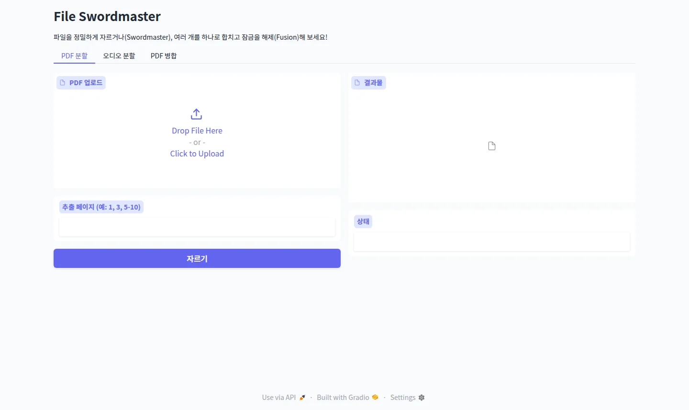
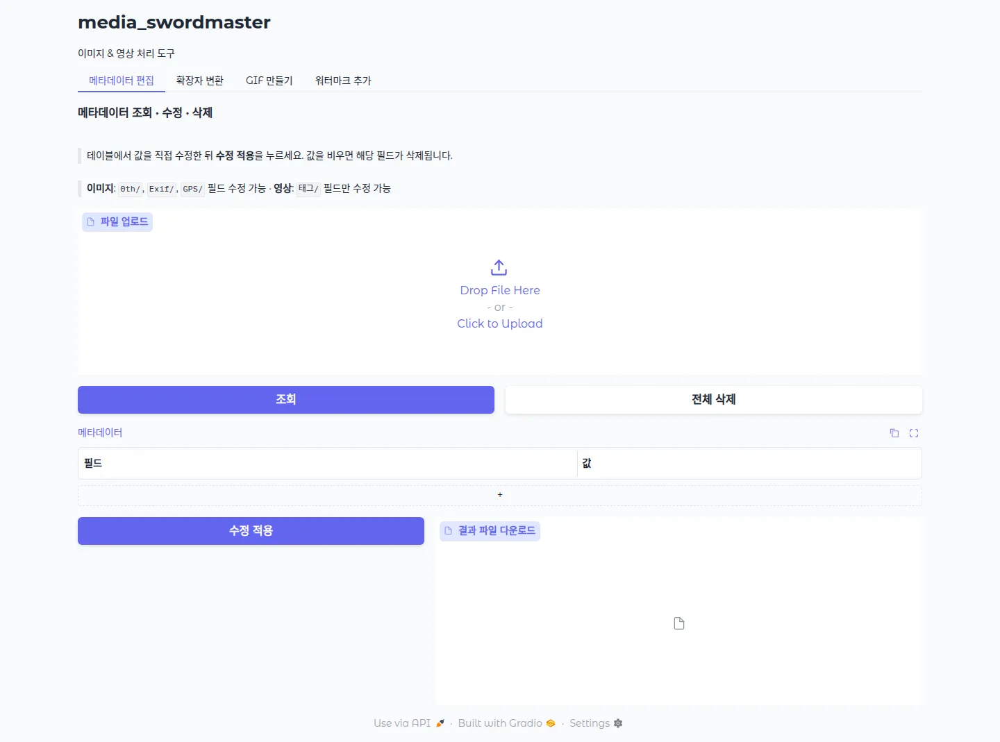

Swordmaster
Gradio 기반의 파일/미디어 처리 웹 툴 모음입니다. 아래에서 필요한 도구를 선택해 들어가세요 — File Swordmaster(PDF · 오디오) 또는 Media Swordmaster(이미지 · 영상).
Swordmaster 둘러보기
두 Swordmaster 도구를 실제로 실행한 화면입니다. 각 프로젝트의 상세 내용은 위 카드에서 확인할 수 있습니다.


Gradio 기반의 파일/미디어 처리 웹 툴 모음입니다. 아래에서 필요한 도구를 선택해 들어가세요 — File Swordmaster(PDF · 오디오) 또는 Media Swordmaster(이미지 · 영상).
두 Swordmaster 도구를 실제로 실행한 화면입니다. 각 프로젝트의 상세 내용은 위 카드에서 확인할 수 있습니다.

